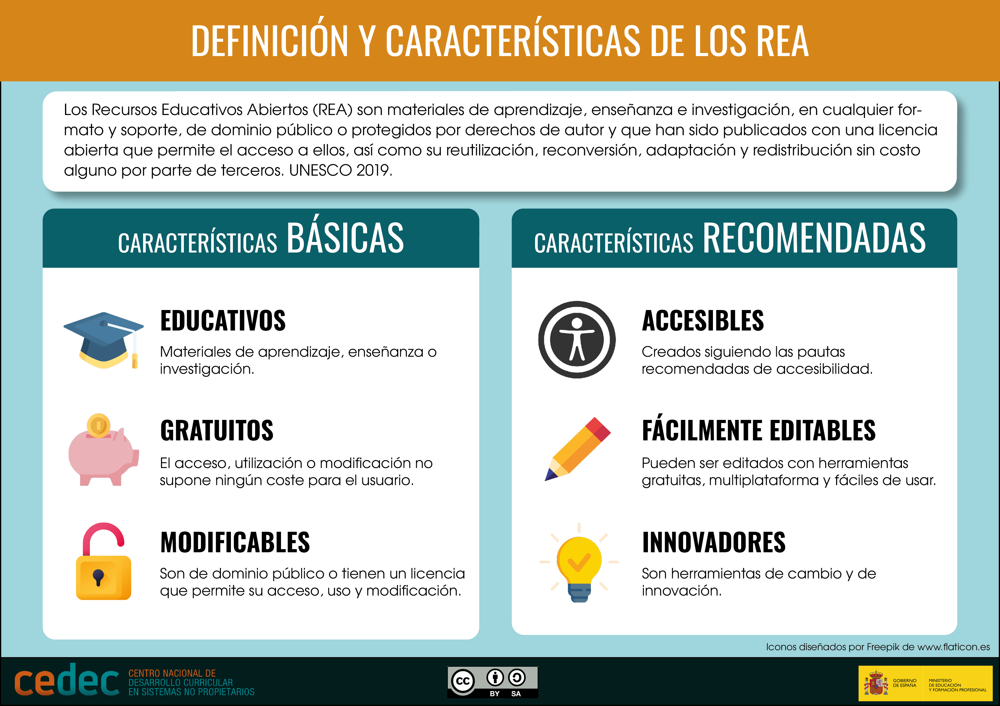

Recurso Educativo Abierto (REA)
Definición
El término Recurso Educativo Abierto (REA) se refiere a materiales de enseñanza, aprendizaje e investigación, disponibles en cualquier formato o soporte. Estos recursos son de dominio público o cuentan con licencias abiertas que permiten su acceso, reutilización, adaptación y redistribución sin costo por parte de terceros (UNESCO, 2019).
La distinción esencial entre un REA y cualquier otro recurso digital radica en su licencia: los REA son materiales educativos en dominio público o publicados bajo una licencia abierta que permite su reutilización, adaptación didáctica, modificación y difusión en la comunidad educativa.
Lectura facilitada
